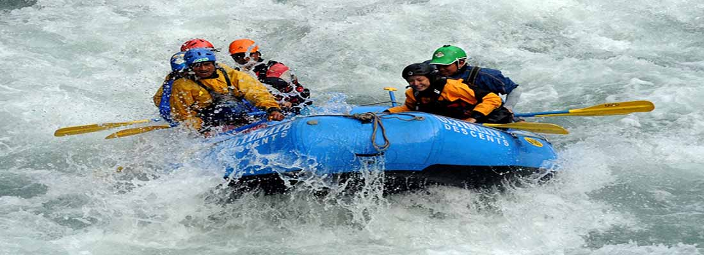

RAFTING
Nepal boasts the most scenic and diverse white-water experiences on the planet. From short trips for beginners to long trips lasting days, the trip takes rafters from the Himalayan region to the (tarai) plains. There are more than a dozen rivers for rafting. Nepal's rivers descend from the highest mountains of the world, growing bigger along the way. Rafters enjoy breaks and meals along stretches of white sandy beaches. There are also stops at waterfalls where people swim in the pool and take a shower in the natural waters flowing down. Water sports and hikes are also part of the adventure along the riverside. Some of the popular rivers for rafting are the Trisuli, Marshyangdi, Karnali, Seti, Sunkoshi and more. Rapids vary from river to river and are graded by experts which gives rafters some idea of what to expect on the trip. They have also been given imaginative names like 'Surprise', 'Upset' 'Big Dipper' etc. It's a day or several days of fun floating down the river enjoying beautiful scenery, sometimes views of distant mountains, and resting on while sandy beaches. Rafting is alo used as a means to get to Chitwan National Park by reaching Narayan Ghat the put out point where the trip ends and a road journey begins. Enjoy deep river gorges, to wide river basins through some of the world famous rivers like, the Sun Koshi, Bhote Koshi, Marshyangdi, Trishuli, Arun where rapid grades range from 1 to 6 and diverse terrain meet exotic flora and aquatic life. Rivers like the Marshyangdi and Arun, provide some of the most scenic views for rafters. Diverse wildlife and flora along the routes, add to the essence of these trips. Plan your rafting trips with local agents, who have well trained teams of river guides , who can manouver the raft through wild rapids and help adventure seekers get an adrenaline rush during the thrilling ride. Plan a short rafting trip which lasts from a day to three days, or longer trips which offer relaxing camp stops combined with short treks along the river lines into rich evergreen forests and sparkling waterfalls. You could also sign up to be a part of the growing kayaking community in Nepal. Join the paddling community, where kayakers from around the world meet, participate in group tours and stay connected through social media, and share stories. It is the perfect opportunity to enjoy a bit of socializing mixed with nature and thrill.
Rivers open for rafting
- Upper Seti River - 1/2 days trip
- Trisuli River - 1 day trip to 2 days
- Marshyangdi River - 2 days
- Kali Gandaki River - 3 days
- Karnali River - 8 to 10 days
- Sunkoshi River - 8 to 10 days
- Tamur River - 10 days